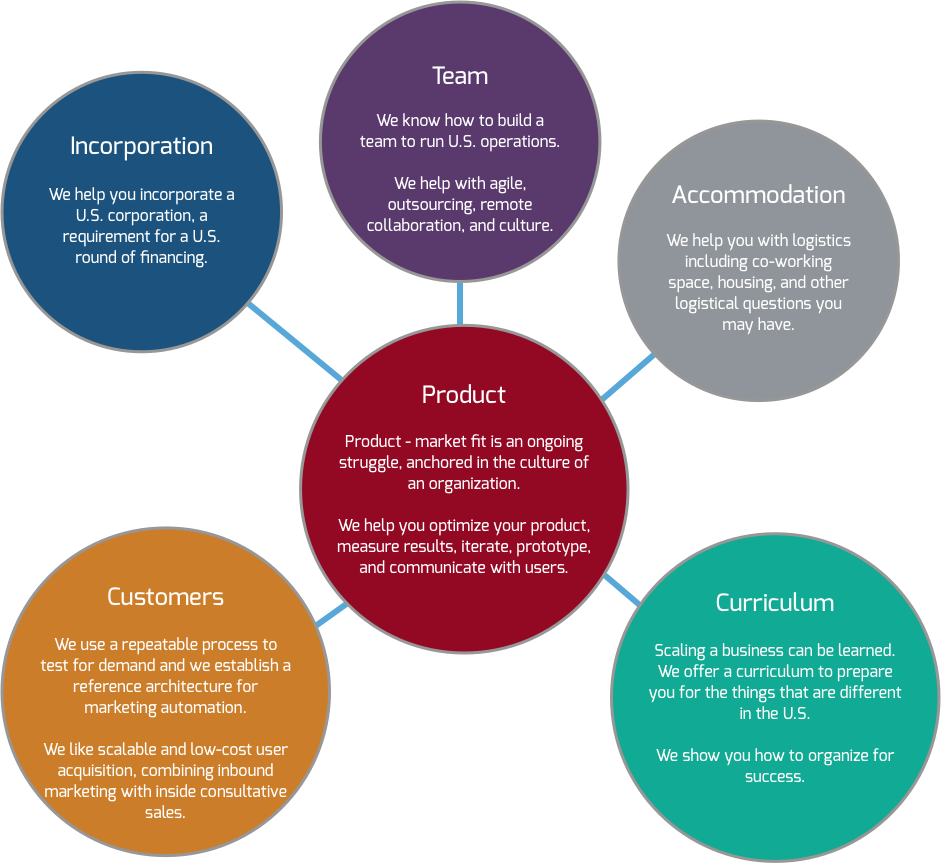

{{> header active_accelerator=true}}
<div class="meat">
  <div class="intro">
    <div class="container">
      <div class="row">
        <div class="col-xs-12">
          <p>It is about results and not the program itself.</p>
          <h1>We help build great teams.<br class="hidden-xs" />
We love iteration.<br class="hidden-xs" />
We are growth engineers<br class="hidden-xs" /> and business model hackers.</h1>
            <p>"Brilliant thinking is rare, but courage is in ever shorter supply than genius.”   -- Peter Thiel </p>
        </div>
      </div>
    </div>
  </div>
    
    
    

      <div class="container-fluid">
          
          <div class="row">
            <div class="col-xs-12">
                <div class="box box-lightgrey">
                  <h2>An individually tailored program</h2>
                    <p>Often it is said that startups can only get big in the U.S., but in reality growth of the startup ecosystem elsewhere has eclipsed the U.S. Here in Boston we have a bias for doers over talkers. We combine awesone teams and their innovative products with U.S. market savvy and access to capital.</p>
                    <p>Our program aggregates experience and wisdom from the best into a structured curriculum. It is a fast track to catching up with the leading edge. We make you focus on the differences encountered in the U.S. market and turn them into an advantage.</p>

                </div>  
            </div>
          </div>


        
      <div class="row box-vert-align">
        <div class="col-sm-6 col-sm-push-6 bg-red">
            <div class="box box-red">
          <h2>The battleground is the U.S.</h2>
          <p>“For most of our companies in enterprise or infrastructure, the battleground is still the U.S. We push our software entrepreneurs to be present and aggressive in the US market from the earliest of stages. America is where the toughest competition lies, and competition makes you stronger. America is where most of the acquirers are, and you have to bring the fight to them to get bought.”</p> 

        </div>
          </div>
        <div class="col-sm-6 centered col-sm-pull-6">
            <div class="box box-blue bg-blue">
          
                                <p class="space"></p>
                <p style="text-align: center;">Fred Destin, Accel Partners, London</p>
                

        </div>
          </div>
        <div class="clearfix"></div>
      </div>
          
          
      <div class="row">
        <div class="col-xs-12">
            <div class="box box-lightgrey">
          <h2>We partner with entrepreneurs who want to get ahead</h2>
          <p>What works in your home market might not work in the U.S. Many things are different. It is a different culture, a much larger market with more competition, and investors are experienced. Getting ahead requires getting immersed. It is about smart work and not just hard work. It's about having a local partner.</p>
                <p>Our approach is first focused on product. We help you test for demand. Then we work with you to adjust market segmentation and messaging. Likely the competitive dynamics are different and require a narrower definition of your market and target persona. We assume you have a product available in your local market. We are experienced with metrication, measuring user engagement based on cohort analysis. Based on that data we enter into an iterative process to make your product a great fit for users.</p>
                <p>Once the product is tracking and we are seeing the good metrics, we focus on your go-to-market strategy. Scaling users can be learned. It is based on marketing automation, growth hacks, inbound campaigns combined with inside sales. We show you our choice of the latest tools and best-practices used by the best.</p>
        </div>
            
{{> register-company}}
            
        <div class="row">
        <div class="col-xs-12">
        <div class="box box-lightgrey"> 
            <h2>Our approach in a nutshell</h2>
            <p>It all seems easy once it is neatly put together.</p>
            <div class="centered">
            
            </div>
          </div>
          </div>
        </div>
            
        <div class="clearfix"></div>
            
          </div>
          </div>


    </div>
  </div>


{{> subscribe}}
{{> footer}}